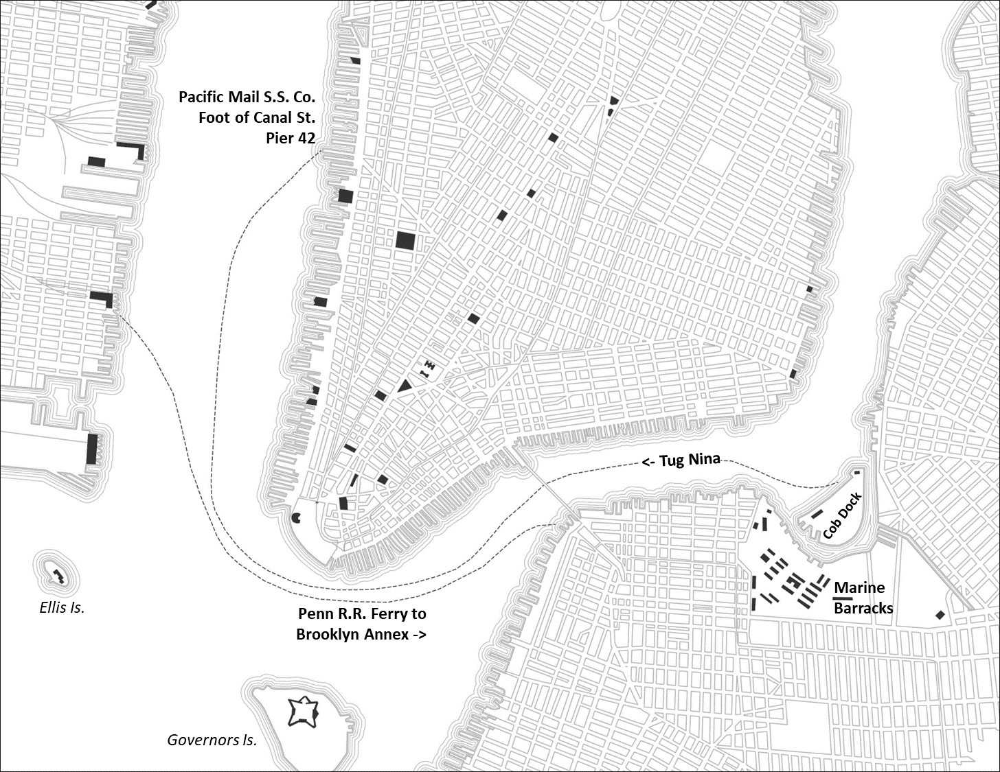

Personal GIS Work
Below are some examples of GIS projects I've taken on over the past few years.
Pittsburgh, PA
Charlottesville, VA
Proposed Fence Installation 01
Proposed Fence Installation 02
Washington, D.C.
Washington, D.C. 1850-2015
Frederick Co, MD 1873
Germany 1859
Historical Research
The below maps were developed during research into Frederick Parks (1866-1944) who emigrated to Washington, D.C. as a small child in 1874 and later served as a bugler in the
U.S. Marine Corps. This included playing in John Philp Sousa's Marine Band in 1884, being deployed to Panama in 1885, and serving on a U.S. Naval Vessel in South America between 1886-1889.
Click here to view a early Story Map of the subject.
Washington, DC (1870s)
New York City (1885)
The above graphic depicts key locations in 1880's Washington D.C. The basemap was produced by georeferencing a 1887 map of the City.

The above graphic depicts ferry routes used by U.S. Marine forces in New York prior to departing for Panama in April 1885.
The basemap here was produced by georeferencing a 1885 map of the City.
Isthmus of Panama (April - May 1885)
Panama City (April 1885)
The above graphic depicts key locations for the U.S. Marine Corps deployment on the Isthmus of Panama in the Spring of 1885.
Then still part of Colombia, U.S. forces were sent to the Isthmus to restore order along the rail link across the Isthmus.
At the time the now famous canal was still nearly 30 years from completion and so rail traffic was vital for commerce between the two great Oceans.
Frederick Parks, a Marine Bugler attached to B Co, 2nd Battalion, arrived at Colon in mid-April 1885 along with 275 other Marines.
In total nearly 700 Marines and Sailors, the largest deployment of U.S. Forces since the Civil War, would take part in restoring order on the Isthmus, moving thier way along the rail from Colon to Panama City.
The above graphic depicts movements of three U.S. Marine columns which advanced onto Panama City, resulting in the restoration of rail traffic across the Isthmus.
Official after action reports from the time were used to develop this map, including georeferencing an accompanying 1885 map of the city.
USS Tallapoosa Log Book Locations (1886-1889)
Between 1886 and 1889, Frederick Parks served on board the USS Tallapoosa as the ship's Marine Bugler. Below are the recorded locations of the Tallapoosa which were
obtained from the ship's original logbook stored at the National Archives. Feel free to click a point to learn more about the Ship's & Frederick Parks journey around South America.
Click here to view the map in full screen.